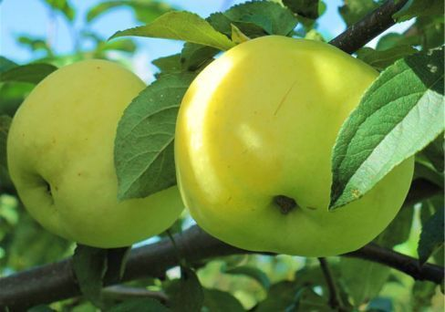
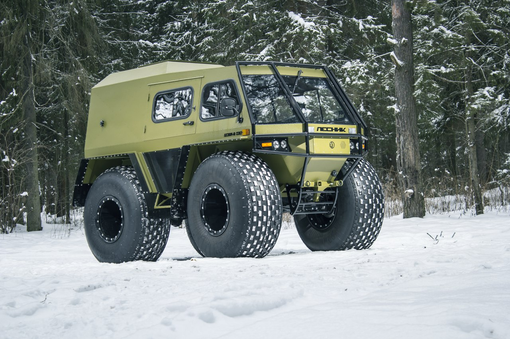
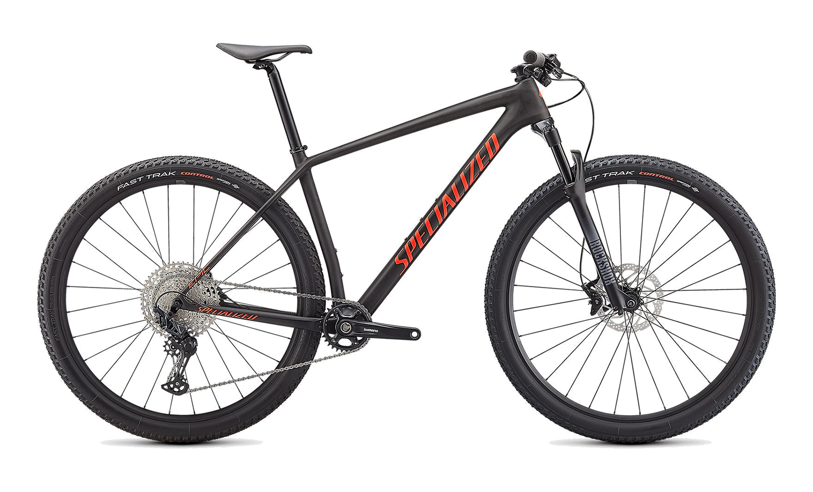

Зелёное яблоко
Одно яблоко в день помогает от семи болезней
Яблоки восстанавливают кровь.
Они богаты железом, и регулярное употребление яблок повышает уровень гемоглобина, что полезно при малокровии и после большой кровопотери.
Они стимулируют прилив жизненных сил, помогают при стрессах и усталости, укрепляют сердечно-сосудистую систему и улучшают работу мозга.
Это происходит благодаря минералам: магнию, фосфору, кальцию, калию, селену и йоду, а также витаминам С, В1, В2, РР, Е.
Яблоки очень полезны гипертоникам, так как удаляют из организма избыточные воду и соль, чем способствуют снижению кровяного давления.
Страдающим от гипертонии надо каждое утро съедать хоть одно кисло-сладкое яблоко или выпивать 1/2 стакана сока из зеленых яблок за час до еды.
Зеленые полезнее красных. В них больше ценных веществ.
К тому же они не вызывают аллергии, потому их (или их сок) рекомендуют давать даже самым маленьким детям и беременным женщинам.
При заболеваниях почек, печени и сердечно-сосудистых болезнях хороши сладкие сорта яблок, при ожирении, диабете - кислые сорта.
Снегоболотоход

Плавающий вездеход, Снегоболотоход «ЛЕСНИК-M СЕВЕР» - это колесный вездеход на шинах сверхнизкого давления.
Он предназначен для перевозки людей и грузов по заболоченной местности и слабонесущим грунтам, льду рек и озер, пересеченной местности, а также преодоления водных преград.
"ЛЕСНИК-М СЕВЕР" имеет цельнометаллический, дюралюминиевый корпус вездехода с утеплением и внутренней отделкой, все дверные и оконные проемы имеют уплотнения.
Данная версия вездехода очень комфортна в случае постоянного его использования для ночлега, а так же при очень низких температурах.
Горный велосипед

Горный велосипед является на сегодняшний день самым популярным и распространенным видом велосипедов.
Этот тип предназначен для езды по неровным дорогам, по местности с сильно пересеченным рельефом.
По конструктивным особенностям амортизации горные велосипеды делятся на четыре основных типа.
Первый тип - ригиды (rigid), которые не имеют амортизации.
Второй тип - хардтейлы (hardtail), они имеют амортизационную вилку.
Двухподвесочные байки (full-suspension) - велосипеды с задней подвеской и амортизационной вилкой.
Четвертый, менее распространенный тип - софттейлы (softtail), эти велосипеды имеют амортизационную вилку, специальная конструкция перьев заднего треугольника рамы обеспечивает амортизацию заднего колеса.
По назначению горные велосипеды делятся на байки для даунхилла, триала, кросскантри, фрирайда, бэккантри и обычные горные велосипеды - велосипеды "общего назначения".